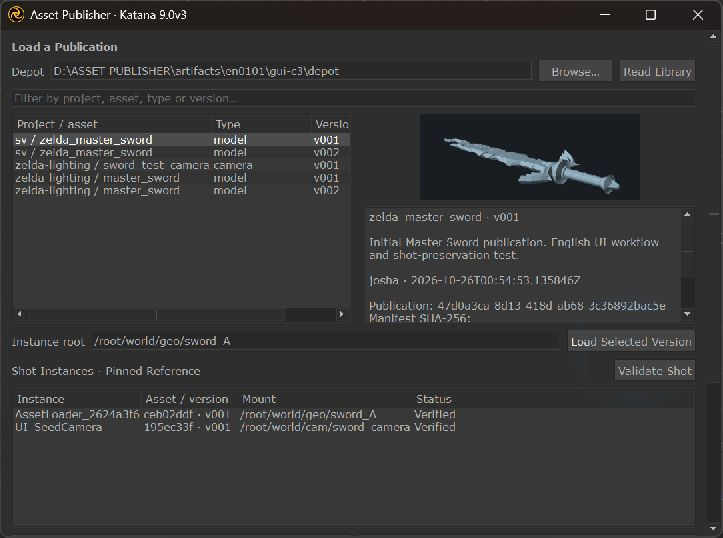
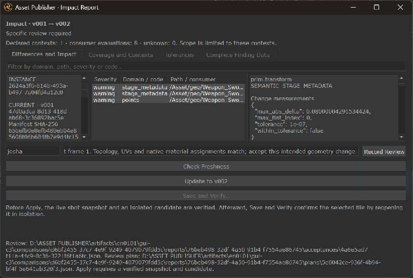
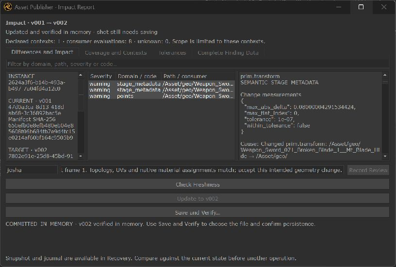
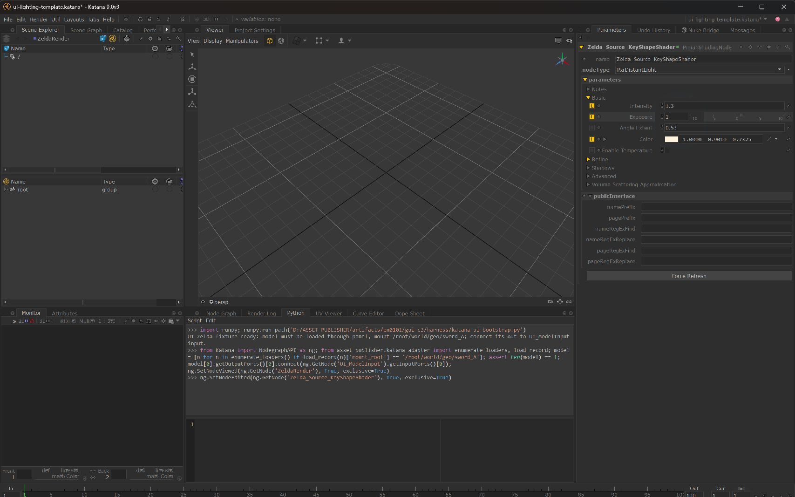
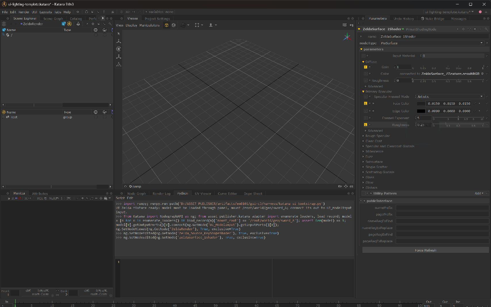
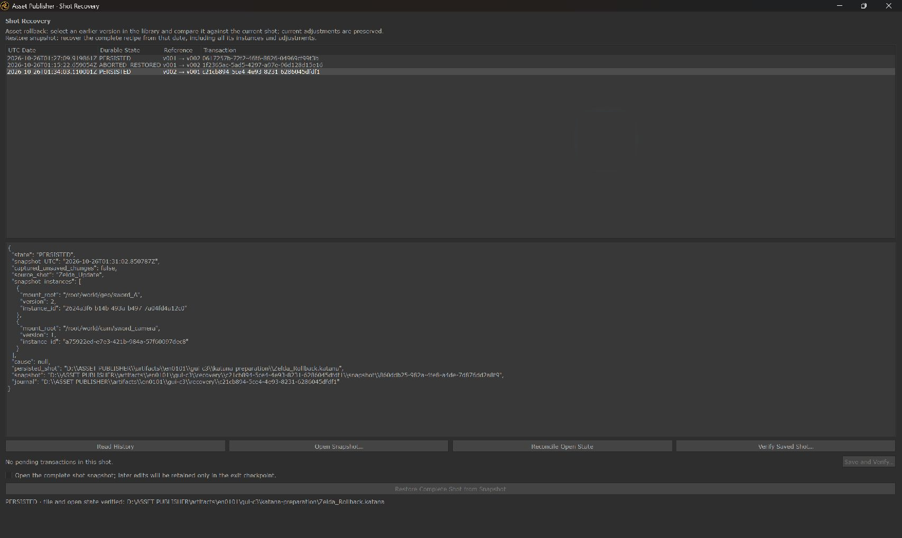
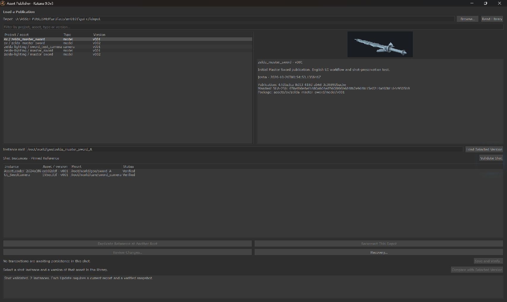

Asset Publisher
& Loader.
Move a versioned USD asset from Maya to Katana, review its changes and recover an earlier version while the shot keeps its lighting and shaders.
My contribution Pipeline architecture · Python development · Maya & Katana integration · validation

A model revision should keep the lighting work.
Once a model reaches a lighting scene, replacing it by hand can break assignments, hide which version is loaded or leave no dependable way back. I built Asset Publisher & Loader to make that handoff explicit: publish an identified version, inspect its impact and choose when it enters the shot.
The tool gives the published asset and the shot separate ownership. USD packages hold the asset data; Katana retains lighting, shader networks, material assignments, placement and render settings. An exact publication pin connects them.
Three decisions make the handoff recoverable.
- Publish once, identify precisely
- Version numbers are reserved exclusively. Committed packages are immutable through the publishing API, with a manifest, required dependencies, a change note and preview. SHA-256 hashes and exact file inventories detect changed or missing data.
- Review meaning before mutation
- The Loader pins a specific publication. Stable asset and prim identities support comparisons of transforms, geometry, UVs and camera data. Reports declare their evaluation coverage; stale state, unsupported dependencies and blocking findings prevent Apply.
- Verify the saved result
- Apply captures the live shot and tests a candidate in isolation before changing the active reference. A successful update in memory remains pending until Save and Verify independently reopens the selected file and checks its state and dependencies.
A controlled change, through the real interfaces.
The Zelda demonstration used the Master Sword from my existing scene: three meshes and 6,040 points. I published v001, changed the blade’s X scale from 1.00 to 1.08 and published v002. Prim identity, topology and UVs stayed stable.
Publish from Maya
Select the asset, prepare its identity and publish a version with a change note, captured source, validated USD, dependencies and preview.
Load an exact version
Find the asset in Katana, load v001 and see the version used by each managed shot instance alongside the available publications.
Review and apply v002
Inspect the semantic differences and declared coverage. Current comparison, required acknowledgements, snapshot and candidate checks all gate the update.
Save, verify and roll back
Independently reopen the saved Update. Review and apply v001 as a new transaction, keeping later shot edits, then verify the saved rollback.

The library and the shot agree
The Loader identifies both available publications and the version actually used by the scene.

A change with visible coverage
The report explains the transform and point differences before Apply. Acknowledging a warning cannot override a blocking validation.
I connected the loaded model to the lighting graph through Katana’s native Python editor. Publishing, loading, review, Update, rollback and Save and Verify were operated through the tool’s visible controls. This English 0.10.1 GUI demonstration evaluates frame 1 with its seed camera.
An applied change still needs a verified save.
The journal separates COMMITTED_IN_MEMORY from PERSISTED. Save and Verify chooses the destination, saves it and independently reopens that exact file before declaring the transaction complete. Cancelling the native save was also tested: the scene stayed unchanged, the transaction remained pending and no destination file was created.

Persistence remains explicit
The Impact Report marks the update as committed in memory. The saved file must pass reopening checks to reach PERSISTED.
Mutation guards and recovery behaviour
Scene capture and mutation stay on the DCC main thread. Suitable checks run in isolated processes or workers, while plan, scene and dependency validity are checked again at the mutation boundary. The interface reports the real operation stage and permits stopping only at safe boundaries.
The session also retained a separate rejected Apply. Creating an evidence helper changed a protected ancestor directory; the integrity guard blocked mutation and Recovery reconciled the attempt as ABORTED_RESTORED. An independent audit verified restoration and the unchanged v001 pin. A fresh reviewed retry completed Update without relaxing its checks.
Asset rollback changes the publication through a new reviewed transaction and preserves current shot adjustments. Restoring a complete shot snapshot is a separate operation that restores the captured recipe.
Rollback keeps the edits made after Update.
After updating to v002, I used Katana’s native parameters to set a RenderMan light’s exposure to 1 and a PxrSurface shader’s specular roughness to 0.25. Those later edits became concrete preservation targets. Rollback restored v001 geometry exactly and retained both values.

Later light edit
Exposure is set to 1 after Update and remains 1 after rollback.

Later shader edit
Specular roughness is set to 0.25 before rollback and remains 0.25 in the independently reopened result.
| State | After Update and later edits | After verified rollback |
|---|---|---|
| Asset geometry | v002 · blade X scale 1.08 | v001 · original geometry restored exactly |
| Light exposure | 1 | 1 · retained |
| Shader roughness | 0.25 | 0.25 · retained |
| Shot state | Lighting, shaders, assignments, camera and persistent Render recipe | Declared native-state checks across 39 nodes passed |
| Persistence | Update saved and independently reopened | Rollback saved and independently reopened |
All ten declared workflow steps passed in one Katana session. The two accepted transactions followed PREPARED → APPLYING → COMMITTED_IN_MEMORY → PERSISTED. Original source inputs remained unchanged. These are native state, dependency and reopening checks; no new pixel-render equivalence is claimed.

Two verified saved transactions
Update and rollback reached PERSISTED. The separate restored guard attempt remains visible and is not counted as a successful transaction.

The earlier asset, with the current shot work
The Loader returns to v001. The later light and shader adjustments remain in the saved, reopened shot.
An installable English release, checked end to end.
The accepted 0.10.1 suite collected 1,299 tests: 1,297 passed, with 69 additional passing subtests and two skips for Windows symlink privileges. It recorded zero failures or errors. A source audit verified that translating the interface retained machine codes, schema fields, identities, version pins and non-text program structure.
A fresh private offline installation on the test machine verified 210 installed files and all 54 product/schema files against the same wheel used for the GUI demonstration. Native diagnostics passed six Maya checks and seven Katana checks, including the defined renderer profile. This is documented tool acceptance; integrating this case study into the website does not rerun those DCC tests.
The ZIP contains the complete English article, full-resolution images and evidence references, including separately attributed historical 0.10.0 results. It is a case-study package, not a software installer.
Current scope and next milestone
Local Windows acceptance
The English GUI run covers one Master Sword instance at frame 1, its seed camera and the defined RenderMan 27.3 recipe in Maya 2026 and Katana 9.0v3 on local NTFS. It does not recertify an animated-camera range, larger shots, other renderers or every display scale. No new timing benchmark or source Arnold look parity is claimed.
Native pauses remain
Keeping host scene access on the main thread preserves its requirements. Some native guards still pause the UI; stage feedback explains the wait, while further reduction remains an engineering goal.
SMB certification pending
Network diagnostics and a certification protocol are prepared. Real share concurrency, disconnect and recovery tests remain pending. Production writes to network depots stay disabled.
Project and evidence
Pipeline architecture, Python development, Maya/Katana integration, artist tools, validation and documentation: Joshua Medina. The Master Sword comes from the existing Zelda test scene; original modelling and source-asset creation are outside the contribution documented here.
Captures show the running English 0.10.1 interface. Seven presentation copies have the highlighted pointer removed using clean areas from native captures of the same session; no AI-generated pixels were used in the final images. Every decoded pixel outside the declared edit regions was verified unchanged. The originals remain preserved with the acceptance evidence; the fourth capture is unchanged.
AOVGuard
Let’s create compelling images and better tools.
Get in touch about lighting, compositing, technical art or pipeline opportunities.
Joshalexmedina@hotmail.com